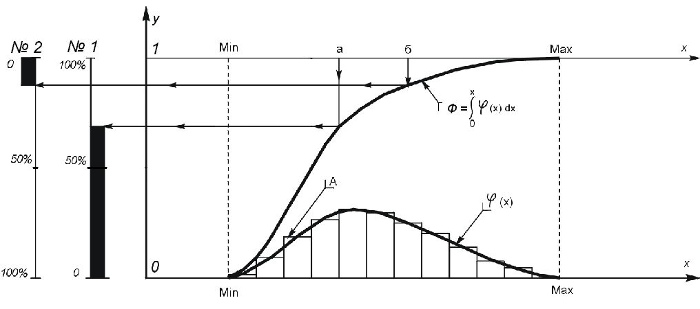

Том 5 · osnovy-sociologii-tom-5.pdf · стр. 121 (кандидат) · Кандидат страницы PDF; требуется сверка · источник: PDF/DOC данной редакции.
Содержит авторские утверждения; их фактическая достоверность оценивается отдельно.
Глава 18. Общественно-экономическая формация
Культура, понимаемая как информационно-алгоритмическая система, в жизни цивилизованного общества выражает себя в виде общественно-экономической формации.
Общественно-экономическая формация (или в иной терминологии — социально-экономическая система) это — способ существования цивилизации, идущей по пути защиты человека от природной среды созданием искусственной среды обитания, т.е. техносферы.
Общественно-экономическая формация включает в себя:
людей (таких, каковы они есть, включая и отношение каждого из них к творческому потенциалу — как собственному, так и общества),
культуру (информационно-алгоритмическую систему, задающую социальную организацию и обслуживающую функционирование общественно-экономической формации во взаимодействии с природной средой и с другими формациями в составе глобальной цивилизации),
а также — организационно-технологический комплекс экономики, т.е. производственное оборудование, транспорт и инфраструктуры, технологии, организационные структуры и процедуры (то, что относится к «материально-технической культуре» и субкультурам управления).
Общественно-экономическая формация может быть локализована в пределах государства, но и совокупность общественно-экономических формаций нескольких государств также является общественно-экономической формацией.
Рассмотрение общественно-экономической формации в качестве объекта управления предполагает выявление порождаемых ею в ней самой и в природе разнородных явлений и свойственных каждому из явлений причинно-следственных взаимосвязей с другими явлениями как в пределах культурно-своеобразного общества, так и с внешними процессами — иносоциальными (порождаемыми из среды других обществ), транссоциальными (затрагивающими несколько культурно своеобразных обществ одновременно), техносферными и общеприродными.
В рассмотрении этой проблематики, на наш взгляд, наиболее продуктивным является институциональный подход, при котором общественно-экономическая формация предстаёт как:
совокупность общественных институтов, взаимодействующих друг с другом через посредничество индивидов, составляющих общество и выступающих по отношению к каждому из общественных институтов в тех или иных ролях;
а также как социальный организм:
<!-- -->
взаимодействующий с организационно-технологическим комплексом своей экономики в процессе воспроизводства и развития техносферы;
и с внешней средой (другими культурно-своеобразными обществами, биосферой и объемлющими процессами1).
Решению поставленной выше задачи наиболее соответствует следующее определение термина «общественный (социальный) институт»:
Общественный институт2 — внутриобщественное образование, несущее специфический набор функций общественного в целом уровня значимости, которые другие общественные институты и люди поодиночке не могут выполнять либо вообще, либо с уровнем качества, необходимым для устойчивости общества в преемственности поколений.
По отношению к решению поставленной нами задачи управления переходом к экотехнологической цивилизации интерес представляют специфические функции и взаимодействие друг с другом четырёх общественных институтов: 1) семьи, 2) государственности, 3) науки и 4) системы образования.
Однако внутрисоциальные образования, порождённые тем или иным вероисповеданием, мы не выделяем в самостоятельный общественный институт под условным названием «церковь», поскольку противостояние науки и религии — это исключительная особенность библейской культуры, не характерная для других культур и вовсе не обязательная по жизни. В других культурах прошлого и современности общественный институт, условно названный нами «церковь», является своего рода оболочкой общественных институтов, которые выше названы «наука» и «система образования». Эта оболочка в чём-то стесняет и извращает деятельность науки и системы образования — тем в большей мере, чем дальше конфессиональное вероучение удалилось от русла Божиего Промысла: это касается как культовых вероучений идеалистического атеизма, так и церквей материалистического атеизма, порождающих идеологии типа марксизма, гитлеризма, чучхе3 и т.п. наукообразные вероучения, обязательные для признания в качестве НЕУСОМНИТЕЛЬНО4 истинных в соответствующих обществах и якобы абсолютно всё объясняющих. По отношению же к рассматриваемой нами задаче управления общественно-экономической формацией во взаимодействии с объемлющими процессами интерес представляют не конфессиональные ограничения на деятельность науки и системы образования, а деятельность самих этих общественных институтов и взаимодействие их друг с другом и обществом.
Средства массовой информации (СМИ) мы не стали выделять в самостоятельный общественный институт, поскольку функционально они представляют собой одну из ветвей системы образования, под воздействием которой люди находятся на протяжении всей жизни. Если СМИ эту образовательную миссию не выполняют, а занимаются манипулированием «общественным мнением»5, то это — не повод для того, чтобы их представлять самостоятельным общественным институтом («четвёртой властью»).
Организационно-технологический комплекс хозяйственной системы, будучи порождением общества и являясь частью техносферы, не является общественным институтом в указанном смысле, хотя он не может функционировать без участия людей. Он находится во взаимодействии как с каждым из названных институтов, обществом в целом, иными обществами, так и с природной средой.
Кроме того во многом аналогичные друг другу6 организационно-технологические комплексы могут обеспечивать жизнь обществ с разным характером каждого из общественных институтов и при разном характере их взаимодействия друг с другом. В частности, как показывает история, все участники второй мировой войны ХХ века7 в своей политике опирались в общем-то на одну и ту же науку, почти на один и тот же набор технологий, организационные структуры их армий и флотов были во многом похожи8, хотя социальная организация — т.е. функции каждого из общественных институтов, характер их взаимодействия друг с другом и с организационно-технологическим комплексом в каждом из государств обладали тем или иным своеобразием, не характерным для других государств в ту же эпоху. Обособленность организационно-технологического комплекса от общественных институтов можно проследить и в другие эпохи исторического периода не завершённой глобализации.
Общество, рассматриваемое как совокупность общественных институтов, вместе с организационно-технологическим комплексом его хозяйства (экономики)9 — это и есть общественно-экономическая формация (социально-экономическая система), необходимость управления развитием которой в гармоничном взаимодействии с Природой становится всё более актуальной на протяжении, как минимум, двух последних столетий.
Если рассматривать вопрос об общественно-экономической формации, как об объекте управления, взаимодействующей с природной средой, то встаёт ряд вопросов.
Вопрос первый: Чем характеризуется жизнь общества, т.е. чем характеризуется жизнь общественно-экономической формации в процессе взаимодействия с природной средой?
Ответ: Разнородными статистиками и их взаимосвязями.
Вопрос второй: Чем характеризуются изменения в жизни общества?
Ответ: Изменениями статистик и их взаимосвязей.
Вопрос третий: Что такое практическая политика?
Ответ: Это — целеполагание в отношении желательного изменения статистик в обозримой перспективе и воплощение намеченных изменений жизнь в результате осуществления выработанных целесообразных действий и их текущей коррекции в соответствии с конкретикой обстоятельств.
Вопрос четвёртый: Могут ли единичные факты заменить собой статистику или набор статистик разного рода в качестве характеристик (показателей) жизни общества?
Ответ: Нет, не могут, поскольку одним и тем же единичным фактам в жизни общества неизбежно сопутствует множество других единичных фактов и именно все они в совокупности образуют статистику, которая действительно характеризует ту или иную сторону жизни общества. Иначе говоря, одним и тем же единичным данным в жизни могут соответствовать разные статистики, и потому единичные факты, не образующие собой репрезентативную выборку10, не могут заменить ни какую-либо одну статистику, ни набор разнородных статистик.
Отступление от темы: Как соображать слово «статистика»
Приходится констатировать, что для подавляющего большинства людей слово «статистика» — не определённое по смыслу: оно не вызывает в их психике никаких общих для них образов, которые они могли бы соотнести с жизненными явлениями. Удручающее впечатление производит то обстоятельство, что слово «статистика» не вызывает адекватных образов даже у тех, кто в своё время прослушал в вузе курс «теория вероятностей и математическая статистика» и получил по нему вполне приличную оценку: как только дело доходит до практического применения в жизни некогда полученных знаний, в подавляющем большинстве случаев оказывается, что знания — сами по себе, а жизнь — сама по себе, вследствие чего её характеристика статистиками оказывается для индивида с одной стороны — невозможной, а при предоставлении ему статистик, — статистики оказываются непонятыми.
Поэтому внесём ясность в вопрос о том, что следует видеть за словом «статистика» в приведённой выше подборке вопросов и ответов. Обратимся к рис. 18‑1.

Рис. 18‑1. Графическое отображение статистикНа рис. 18‑1 показана система координат 0xy:
По горизонтали — ось абсцисс x. По оси x откладываются значения параметра, по которому распределено рассматриваемое множество.
По вертикали — ось ординат y. По оси y откладываются значения функций плотности распределения φ(x) и интегральной функции распределения Ф(x).
Параллельно оси абсцисс на уровне максимально возможного значения интегральной функции распределения y = Ф(x) = 1 проведена горизонтальная шкала, дублирующая ось x. Она может быть полезной (для удобства) в некоторых случаях при работе со статистическими данными, представленными в такой графической форме.
Кроме того, параллельно оси y размещены ещё две шкалы: № 1, № 2. Обе эти шкалы — процентные, но встречной направленности, поскольку в одних задачах необходим отсчёт доли статистики, включающей в себя максимум значения рассматриваемого параметра; а в других задачах необходим отсчёт доли статистики, включающей в себя минимум значения рассматриваемого параметра. Как ими пользоваться, видно из самого рис. 18‑1:
Широкая чёрная полоса вдоль шкалы № 1 отмечает долю статистики, в которой значение анализируемого параметра меньше, чем значение «а», отмеченное на верхней шкале изменений аргумента.
Широкая чёрная полоса вдоль шкалы № 2 отмечает долю статистики, в которой значение анализируемого параметра выше, чем значение «б», отмеченное на верхней шкале изменений аргумента.
Кроме того в осях 0xy показаны:
Столбиковая диаграмма «А». Высота каждого столбика в масштабе оси y равна доле статистики, попадающей в диапазон значений аргумента x, который лежит в основании каждого из столбцов.
Если сделать более мелкое разделение диапазонов, то дискретная плотность распределения «А» может быть аппроксимирована непрерывной плотностью распределения φ(x), что в ряде задач может быть более удобным.
Если плотность распределения φ(x) существует (в жизни встречаются распределения, для которых функция плотности распределения не существует) и её проинтегрировать, то получим кривую *Ф(x) *, с масштабом отображения которой по оси y связаны шкалы № 1 и № 2.
Дискретный аналог кривой *Ф(x) *не показан, чтобы не загромождать рисунок. Его можно получить, если к высоте каждого из столбиков диаграммы «А» добавить сумму высот всех столбиков, находящихся слева от него по оси x.
Кривая Ф(x) (и её не построенный дискретный аналог) вместе со шкалами № 1 и № 2 показывает статистическое распределение анализируемого множества по рассматриваемому параметру x.
Представление в такой форме разного рода статистик (в том числе и нескольких статистик в одних и тех же осях) нам представляется удобным.
Современная оргтехника позволяет демонстрировать управленцу и заинтересованной аудитории в ходе выступлений всевозможные иллюстрации, включая и отображение статистических данных в наглядной форме рис. 18‑1, которым может сопутствовать некая «цифирь», позволяющая метрологически состоятельно (см. раздел 1.3 — том 1 настоящего курса) соотнести одну статистику с другой.
Если в этой форме представлена социальная статистика, то в осях 0xy единицей измерения численности населения в разных статистических группах является общая численность населения: в масштабе оси y она равна 1. А каждая выделенная социальная группа, на которую приходится некая доля статистического распределения по рассматриваемому параметру x, — доля от этой единицы. Шкалы № 1, и № 2 по своей смысловой нагрузке аналогичны оси y, с тою лишь разницей, что они оразмерены в более предпочтительной для многих людей процентной мере.
Горизонтальные шкалы аргумента x могут быть как размерными, так и обезразмеренными по тем или иным характеристическим показателям, которые характерны для той или иной теории подобия (см. раздел 6.10), привлекаемой к анализу и проектированию статистических характеристик соответствующего объекта (системы).
В этой форме может быть отображена любая по содержанию статистика, из некоторого набора статистик, которыми характеризуется общественно-экономическая формация в процессе её взаимодействия с природной средой.
Далее продолжение основного текста.
* *
*
Соответственно постановка задачи управления развитием общественно-экономической формации в процессе взаимодействия с природной средой приводит к вопросу о наборе статистик (выступающих в процессе управления в качестве контрольных параметров), которыми характеризуется процесс. По сути это вопрос о характеристиках экологической обстановки и критериях экологической — биосферно-социально-экономической — безопасности. В силу развития глобальной цивилизации по техносферному пути и воспроизводства техносферы на основе экономической деятельности это проблематика обеспечения экономической безопасности общества и государств в самом широком смысле.
Нежелание относить проблематику экологии и демографии к тематике обеспечения экономической безопасности общества и государства, фактически свойственное многим зарубежным и отечественным научным школам экономики, не только не оправдано, но и жизненно опасно. Это нежелание проистекает из узости кругозора учёных-экономистов, замкнувшихся в финансово-счётном подходе к хозяйственной деятельности, господствующем в экономической науке со времён победы наследников меркантилистов над физиократами. И это противоречит не только сути явления экономической безопасности в широком смысле этого термина, но и структуре человеческого миропонимания. Дело в том, что слова «экология» и «экономика» — изначально однокоренные, так как восходят к древнегреческому слову «экос»11 — дом. А дом не может существовать без населяющих его и заботящихся о нём людей. И поскольку хозяйственная деятельность, которую изучает экономическая наука, оказывает воздействие на экологию регионов и планеты в целом, то экономическая наука не в праве уклоняться от анализа последствий воздействия хозяйственной деятельности на экологию и выработки методов управления не только хозяйственной деятельностью как таковой, но и методов управления экологическими последствиями хозяйственной деятельности.
Соответственно изложенному, комплекс критериев12 «экономической безопасности общества и государства в широком смысле» должен включать в себя три группы параметров:
Физико-географические, характеризующие устойчивость ландшафтов и биоценозов, биосферы в целом и тенденции их эволюции.
Демографические, характеризующие динамику изменения численности и распределения населения по территории государства, качество населения (в аспекте медико-биологического здоровья и социокультурной состоятельности) и количественно-качественные демографические тенденции.
Сугубо экономические, характеризующие производственно-потребительскую систему государства в целом и её элементы (отрасли, предприятия, населённые пункты, социальные группы и т.п.) и финансовую систему государства в процессе их взаимодействия с внешними хозяйствующими субъектами, то есть характеризующие экономическую безопасность в узком смысле13. Она включает в себя два аспекта: 1) устойчивое функционирование многоотраслевой производственно-потребительской системы, 2) её способность производить спектр продукции, который признаётся соответствующим критериям потребительской безопасности общества и задачам экономического обеспечения политики государства. При этом обеспечение экономической безопасности в узком смысле в каждом из аспектов нуждается в своём специфическом научно-методологическом обеспечении, а устойчивое функционирование производственно-потребительской системы является объективно необходимой предпосылкой к её дальнейшему развитию с целью обеспечения второго14.
Практически это означает, что «экономическая безопасность общества и государства» в узком смысле может обеспечиваться как в случае жизненно-состоятельной, так и в случае самоубийственной по своим последствиям политики, проводимой государством. Но самоубийственная политика неизбежно приведёт к потере экономической безопасности в широком смысле в более или менее отдалённом будущем, что будет выражаться в падении показателей здоровья и культурной состоятельности населения и разрушении биосферы. Это при интенсификации глобализации может затронуть и другие общества, а также и всё человечество.
———————
Но в любом варианте политики организационно-технологический комплекс и хозяйственная деятельность всегда являются следствием функционирования общественных институтов. И для благополучного развития общества каждый из названных составных элементов общественно-экономической формации должен выполнять характерные для него функции во взаимосвязи с другими элементами. Сбои или извращения функций в работе одного из них оказывают негативное воздействие и на другие компоненты общественно-экономической формации, и соответственно — на жизнь общества в целом. Поэтому необходимо определиться в функциях, которые выражают суть этих институтов, и в общественно необходимом характере их взаимодействия друг с другом и организационно-технологическим комплексом хозяйственной системы. Объективно необходимые характеристические функции и взаимосвязи выше названных общественных институтов друг с другом сведены нами в таблицу 18-1.
**Таблица 18-1. Объективно необходимые
характеристические функции и взаимосвязи
общественных институтов
**
<table> <colgroup> <col style="width: 8%" /> <col style="width: 6%" /> <col style="width: 21%" /> <col style="width: 21%" /> <col style="width: 21%" /> <col style="width: 21%" /> </colgroup> <thead> <tr class="header"> <th colspan="2" rowspan="2"></th> <th colspan="4"><strong>Общественные институты как источники благ</strong></th> </tr> <tr class="odd"> <th><strong>Семья<br /> даёт</strong></th> <th><strong>Государственность<br /> обеспечивает</strong></th> <th><strong>Наука<br /> обеспечивает</strong></th> <th><strong>Система<br /> образования обеспечивает</strong></th> </tr> </thead> <tbody> <tr class="odd"> <td rowspan="2"><blockquote> <p><strong>Общественные институты как получатели благ</strong></p> </blockquote></td> <td><blockquote> <p><strong>Семье</strong></p> </blockquote></td> <td><p><em>1. Продолжение рода.</em></p> <p><em>2. Непосредственную заботу друг о друге членов семьи.</em></p></td> <td>Социальную защищёность и факторы, обуславливающие качество жизни семьи и личности.</td> <td>Кругозор подрастающих поколений и взрослых сверх обязательного образовательного минимума, принятого в обществе.</td> <td>Стартовый уровень образованности и профессионализма вступающих в жизнь новых поколений, как основу для их интеграции в жизнь общества.</td> </tr> <tr class="even"> <td><blockquote> <p><strong>Государственности</strong></p> </blockquote></td> <td><p>1. Людские ресурсы.</p> <p>2. Нравственность.</p> <p>3. Этику. </p> <p>4. Основы культурного единства общества. </p></td> <td><p><em>1. Организацию системы управления.</em></p> <p><em>2. Воспроизводство субкультуры управления на профессиональной основе в преемственности поколений.</em></p></td> <td>Научно-методологическое обеспечение текущего государственного управления и выработки политического курса на будущее.</td> <td><p>1. Основы культурно-политического единства общества.</p> <p>2. Кадры профессионалов-управленцев.</p></td> </tr> <tr class="odd"> <td rowspan="2"><blockquote> <p><strong>Общественные институты как получатели благ</strong></p> </blockquote></td> <td><blockquote> <p><strong>Науке</strong></p> </blockquote></td> <td><p>1. Людские ресурсы.</p> <p>2. Нравственность.</p> <p>3. Этику. </p> <p>4. Основы культурного единства общества. </p></td> <td><p>1. Организацию системы.</p> <p>2. Поддержку фундаментальной науки.</p> <p>3. Постановку исследовательских задач в интересах осуществления политики.</p></td> <td><em>Воспроизводство субкультуры научных исследований и решения прикладных задач.</em></td> <td>Кадры профессионалов-исследователей и разработчиков.</td> </tr> <tr class="even"> <td><blockquote> <p><strong>Системе образования</strong></p> </blockquote></td> <td><p>1. Людские ресурсы.</p> <p>2. Нравственность.</p> <p>3. Этику. </p> <p>4. Основы культурного единства общества. </p></td> <td><p>1. Организацию системы.</p> <p>2. Постановку образовательных задач.</p></td> <td><p>1. Методологию познания и творчества.</p> <p>2. Миропонимание (т.е. тематику и содержание образовательных стандартов).</p> <p>3. Кадры профессионалов-преподавателей.</p></td> <td><em>Кадры профессионалов-преподавателей.</em></td> </tr> </tbody> </table>
На основе таблицы 18‑1 модель взаимодействия общественных институтов друг с другом при выполнении характеристических функций каждого из них может быть развёрнута до необходимой степени детальности. Но игнорировать в политике и бизнесе тот минимум, который отображён в таблице 18-1, — значит разрушать общество, калечить телесно и психически множество людей и сживать их со свету.
Кроме того, поскольку культура (будучи информационно-алгоритмической системой) вторична по отношению к концепции управления, под властью которой живёт общество, то концепция управления в большей или меньшей мере выражает себя в функционировании каждого из общественных институтов и в их взаимосвязях.
Теперь перейдём к рассмотрению каждого из общественных институтов.
Глава 18 в редакции от 12.03.2016 г.
Соответственно представленному на рис. 13.2.2-1 (гл. 15) и 13.2.2-2 (том 4 настоящего курса).↩
Несколько альтернативных определений, ни одно из которых нас не устраивает:
«Общественный институт [от латинского institutum — установление, учреждение] — совокупность общественных структур, связанных с определенным кругом общественных отношений, и практика их применения доступным обществу образом» (Теоретические аспекты и основы экологической проблемы: толкователь слов и идеоматических выражений. — Чувашский государственный университет им. И.Н. Ульянова. УНПП «Лаборатория проблем цивилизации». В.П. Галкин. 1998: http://ecological_problems.academic.ru/310/Общественный_институт).
«Социальный институт — исторически сложившаяся или созданная целенаправленными усилиями форма организации совместной жизнедеятельности людей, существование которой диктуется необходимостью удовлетворения социальных, экономических, политических, культурных или иных потребностей общества в целом или его части. Институты характеризуются своими возможностями влиять на поведение людей посредством установленных правил» (Social Institutions // Stanford Encyclopaedia of Philosophy).
«Общественный институт — это постоянно повторяющиеся и воспроизводящиеся отношения людей. Например, институт брака, институт семьи, институты государственного администрирования.
↩Общественный институт — это устойчивая совокупность людей, групп, учреждений, деятельность которых направлена на выполнение конкретных общественных функций; строится эта деятельность на основе определенных норм, правил. Примеры: семья, государство, учреждения образования, здравоохранения. Различают 4 сферы жизнедеятельности общества, в каждую из которых входят различные общественные институты и возникают различные общественные отношения. Общественные отношения — это многообразные связи между группами, классами, нациями в процессе социальной, экономической, политической и духовной деятельности. Эти связи должны быть устойчиво повторяющимися, безличными (формальными), затрагивающими важные стороны жизни» (http://dic.academic.ru/dic.nsf/ruwiki/53643).
Идеологическая система, лежащая в основе псевдосоциалистической (национал-социалистической) государственности КНДР и оказывающая через неё воздействие на все стороны жизни северокорейского общества.↩
Как уже отмечалось, сомнение в истинности чего либо не обращает истины в ложь или в заблуждение, а при владении достаточно эффективной личностной познавательно-творческой культурой и искреннем желании постичь истину, приводит к сомневающегося к истине и познанию её ранее неизвестных граней. А вот жизненно несостоятельные учения нуждаются в защите и от сомнений в их истинности, и познавательно-творческой активности, неизбежно ведущей к обнажению их несостоятельности.↩
«Печать — это ещё не общественное мнение» (Отто фон Бисмарк: http://tsitaty.com/автор/отто-фон-бисмарк/2).↩
По набору технологий, организационным процедурам и структурам.↩
Третий рейх (гитлеровская Германия), Япония, СССР, буржуазно-либеральные государства антигитлеровской коалиции, многие жертвы агрессии Германии и Японии.↩
При реализации структурного способа управления в отношении решения одних и тех же задач архитектура структур проистекает из этапов полной функции управления и их взаимосвязей. Иначе говоря, дело диктует архитектуру структуры. Более обстоятельно об этом см. главу 7 в целом, и раздел 7.4 в ней, в частности (том 1 настоящего курса), а также работу ВП СССР «О культуре административной деятельности».↩
Хозяйственная система — это организационно-технологический комплекс (часть техносферы) и взаимоотношения людей в процессе хозяйственной деятельности, т.е. в процессе обслуживании ими технологических и организационных процессов, связанных с целеполаганием, производством и распределением продукции и доступом к природным благам.↩
Репрезентативная выборка — подмножество во множестве, исследуемом с применением аппарата теории вероятностей и математической статистики. Будучи относительно небольшой по объёму долей исследуемого множества, репрезентативная выборка обладает тем свойством, что её статистические характеристики идентичны (с приемлемой для практики точностью) статистическим характеристикам полного множества.↩
Οἶκος — обиталище, жилище, дом, имущество.↩
Критерии — значения контрольных параметров, превышение (либо недостижение) которых означает, что качество управления ниже, чем допустимо. Критерии могут быть численными, могут быть значениями логических переменных, могут быть «геометрическим местом точек» в некотором пространстве формальных параметров — в зависимости от характера управленческой задачи.↩
Этот подход реализован в модельном законе «О стратегическом прогнозировании и планировании социально-экономического развития» Межпарламентской Ассамблеи государств — участников Содружества Независимых Государств. См. Приложения 1 и 2 к этому законодательному акту. Принят на сессии МПА СНГ 28 ноября 2014 г. Постановление МПА СНГ от 28.11.2014 № 41-10. — Официальный сайт МПА СНГ: http://www.iacis.ru/upload/iblock/861/prilozhenie_k_postanovleniyu_10.pdf.↩
Конкретный набор статистик, характеризующих процесс взаимодействия общественно-экономической формации с природной средой, значения критериев оценки качества управления, привязка набора статистик и критериев определённой территории или акватории, в границах того или иного периметра могут быть выработаны только в ходе комплексной научно-исследовательской работы (НИР), ориентированной на создание и совершенствование системы государственного и хозяйственного управления, опирающейся на объективные закономерности всех шести групп, которым подчинена жизнь людей, социальных групп, культурно своеобразных обществ и человечества в целом.
Т.е. всё это не может возникнуть в результате партийных «разборок» и многопартийного парламентского законотворчества на основе буржуазно-либеральной модели социальной организации и государственного управления. Парламент и правительство, приверженные этой модели, вряд ли смогут даже сформировать техническое здание на такого рода работу, не говоря уж о том, чтобы оценить её результаты, если такого рода НИР всё же будет выполнена. Как показывает практики, научный официоз к постановке и осуществлению такого рода НИР — не способен на протяжении многих десятилетий, начиная ещё со сталинских времён…↩